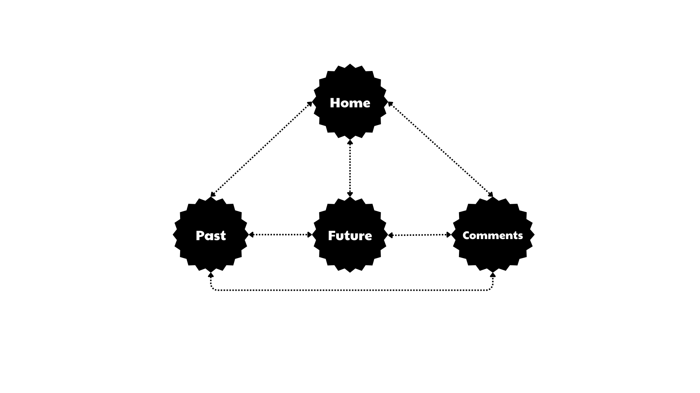
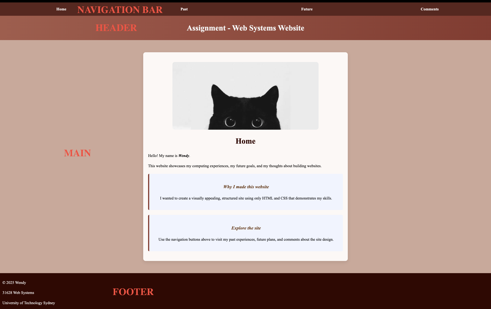
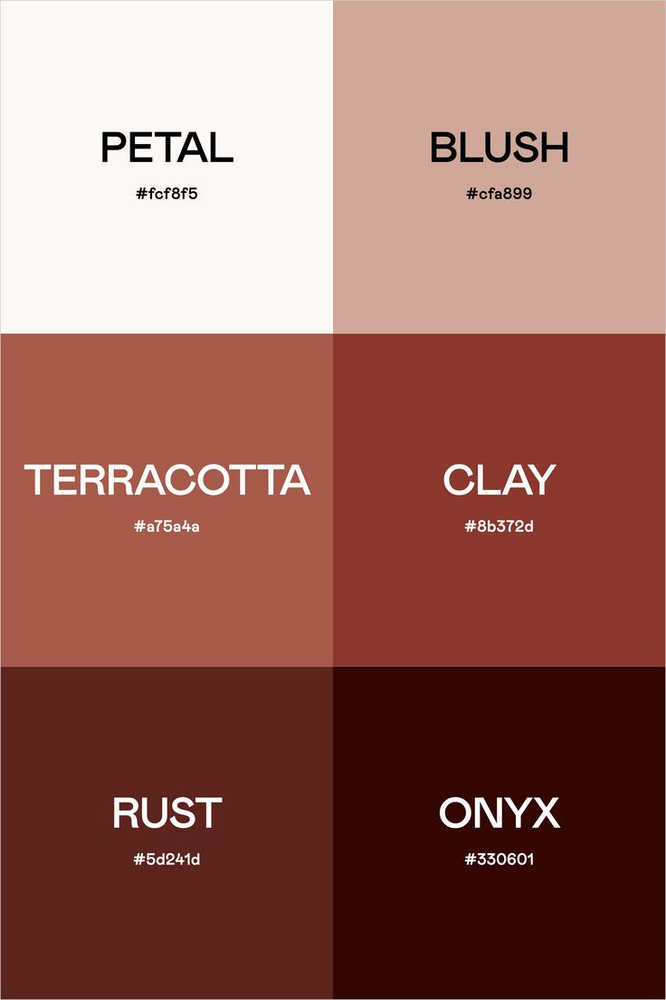
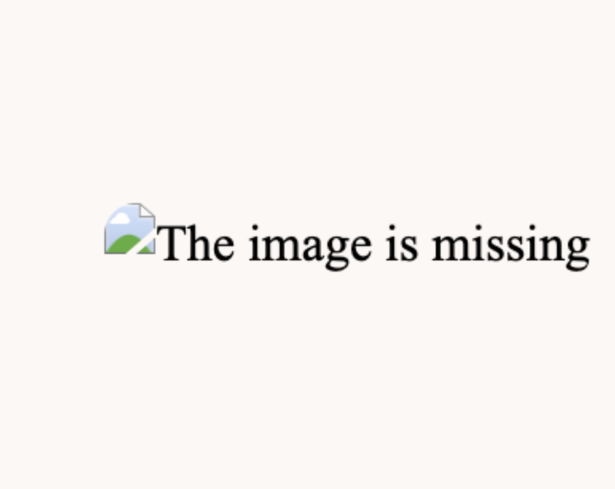
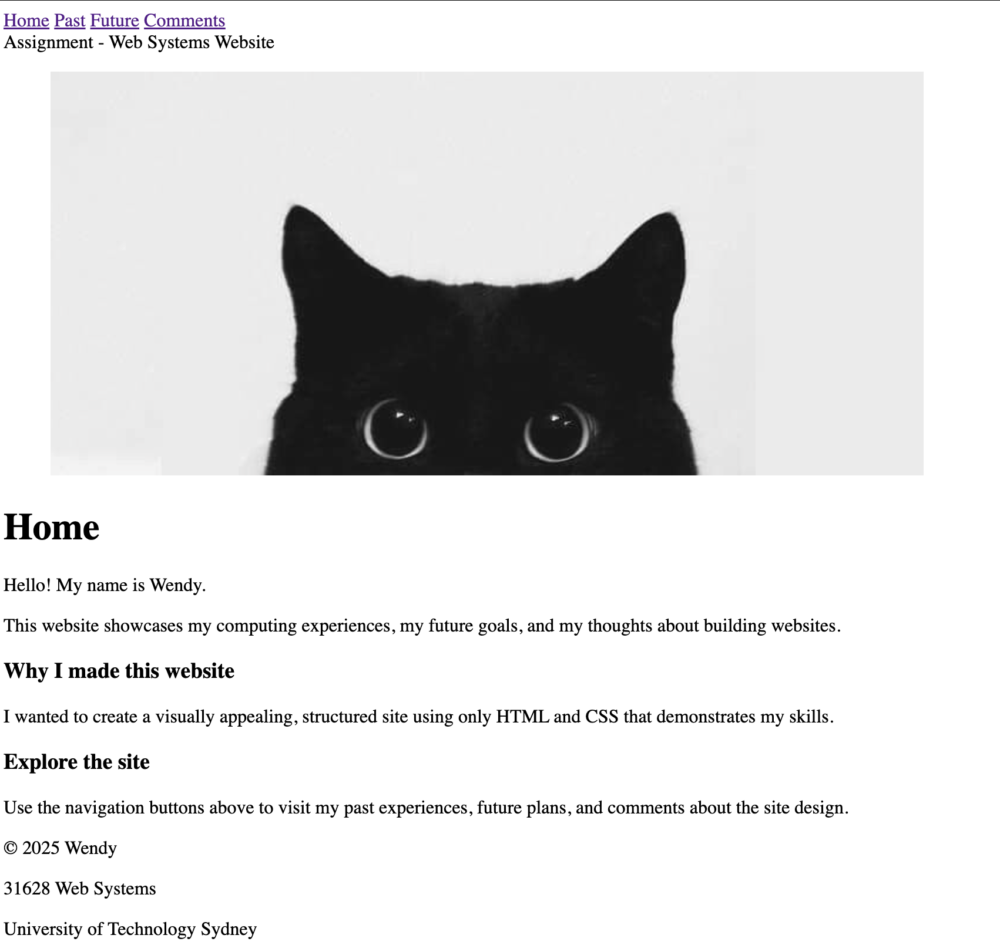

Overall Site Structure
This table below showcases all relevant files creating this website and their different purposes:
| Filename | Title | Type | Description |
|---|---|---|---|
| index.html | Home-Wendy's Website | HTML | Main homepage of the website |
| past.html | Past-Wendy's Computing Journey | HTML | Wendy's Computing Journey |
| future.html | Future-Wendy's Vision Board | HTML | Wendy's Vision Board |
| comments.html | Comments and Analysis | HTML | Comments and analysis of the website structure, CSS and design |
| websystems.css | N/A | CSS | External stylesheet for consistent styling across all pages |

Internal Page Structure
This table below explains the HTML structure of each page:
| Page | Header | Navigation | Main Content | Footer | Special Features |
|---|---|---|---|---|---|
| index.html | Assignment-Web Systems Website-Page Title banner | Navigation bar with links to all pages | Introduction paragraph, along with two flashcards | Copyright Info | Flashcards hover effect |
| past.html | My Computing Journey-Page Title banner | Navigation bar with links to all pages | Timeline cards with front images and back content | Copyright Info | Flip animation for timeline cards |
| future.html | My Vision Board-Page Title banner | Navigation bar with links to all pages | Vision board with grid cards | Copyright Info | Hover overlay effect on vision cards |
| comments.html | Comments and Analysis-Page Title banner | Navigation bar with links to all pages | Tables, text explanations, images and diagrams | Copyright Info | Structured comments and analysis with visuals and tables |

CSS Styles Summary
Summary of key CSS configurations across the site:
| Selector | Type of Selector | Purpose/Effect | Where used |
|---|---|---|---|
| body | Element | Sets the default style for webpage body. | All pages |
| footer | Element | Styles the footer section for consistent background, text and padding. | All pages |
| nav | Element | Arranges navigation links included in a horizontal menu. | All pages |
| nav a | Element | Styles individual navigation link with color, alignment and interaction effects. | All pages |
| nav a: last-child | Pseudo-class | Removes the divider for the last link. | All pages |
| nav a: hover | Pseudo-class | Adds hover effect for better user experiences. | All pages |
| main | Element | Offers spacing around the main content of the webpage. | All pages |
| .my-span | Class | Highlights text with emphasis. | All pages where inline emphasis is needed |
| .header | Class | Styles the page header/banner. | All pages |
| .main-homepage | Class | Contains main content blocks with consistent layout and background. | Home, Comments and Analysis pages |
| .flashcard | Class | Separates content blocks with interactive hover effects. | Home page |
| h1, h2 | Element | Sets the headings'style for readability and emphasis. | Home, Comments and Analysis pages |
| h3 | Element | Sets the subheadings' style with oblique emphasis. | All pages |
| ul | Element | Styles unordered lists with custom bullets. | Past, Comments and Analysis pages |
| .img | Class | Sets the default style for all encompassed images with rounded corners. | All pages |
| .timeline | Class | Organises relevant timeline cards in a responsive flex layout. | Past page |
| .card, .card-inner, card-front, card-back | Class | Designs the overall structure and flip animation for timeline cards. | Past page |
| .card-images, .front-img | Class | Adds layered images with interactive effects. | Past page |
| .card-back ul, .card-back li | Class | Ses the style for the list content hidden behind timeline cards. | Past page |
| .vision-board | Class | Organises relevant vision cards in a responsive grid layout. | Future page |
| .vision-card | Class | Styles vision board cards with hover transform and shadow. | Future page |
| .vision-overlay, .vision-overlay h3 | Class | Adds overlay text effect on hover feature for vision board cards. | Future page |
| #visionboard | ID | Styles the colour for the vision board heading. | Future page |
| figcaption | Element | Sets the default style for all image captions. | All pages |
| .graphicaldesign | Class | Styles the format of the image and related figcaption in the graphical design section. | Comments and Analysis page |
| .imgGraphic | Class | Adjusts the size and display of image attached in the graphical design section. | Comments and Analysis page |
| table, th, td | Element | Style all included tables showing on the website. | Comments and Analysis page |
Graphical Design

Colour
The website uses a warm color palette including petal, blush, terracotta, clay, rust and onyx. Gradient and subtle card backgrounds not only enhance readability but also create an inviting aesthetics.
Font
Serif fonts such as Times New Roman and Palatino offers a classic and readable appearance. Besides, bold, italic and oblique styles are correctly utlized to emphasize headings and key elements.
Interactive features
Hover effects on flashcards, timeline cards, vision board cards significantly encourage user engagement without overwhelming the website layout.
Layout and Structure
Appropriate usage of containers and flex or grid layouts ensures the content is well-organized, repsponsive and easy to follow.
Accessibility
The website ensures that all users, including those using assistive technologies, can navigate and understand the content effectively.

Use of alt Tags
All images involved on the website have descriptive alt attributes. These provide text alternatives for screen readers, helping visually impaired users understand the content of each image. For example:
- The color palette image has
alt="Website color palette", clearly describing the purpose of the visual.
The website also follows best practices for alt text:
- Summarizing the key purpose of the image.
- Providing meaningful context related to the surrounding content.

Other Accessibility Features
- Site remains readable when CSS is disabled.
Without styling, the core structure of the website(headings, paragraphs, lists and links) still ensures the information listed in all web pages is presented in a clear and logical order. This ensures that even users utilizing text-only browsers or those who turn off stylesheets for faster loading can still navigate through the website and read the website's content.